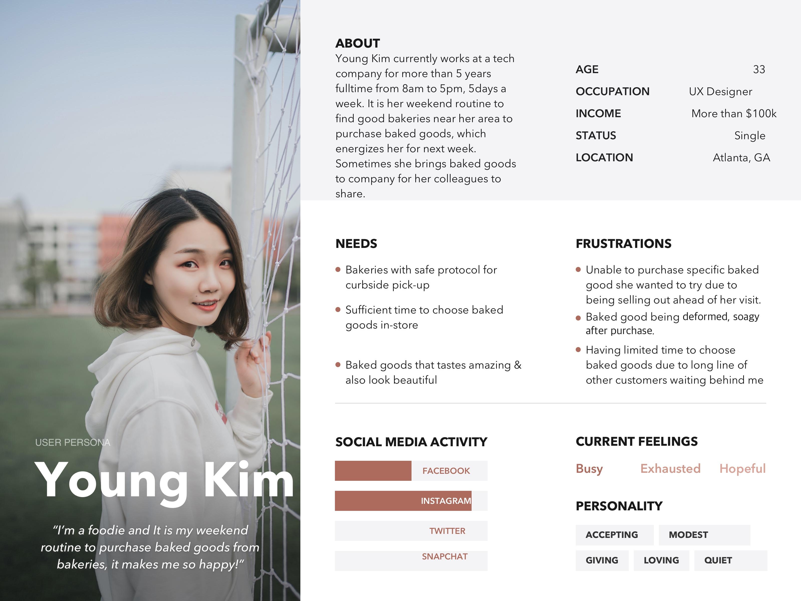
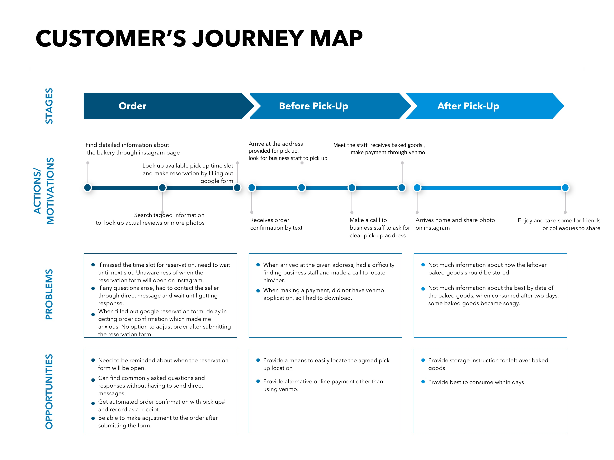
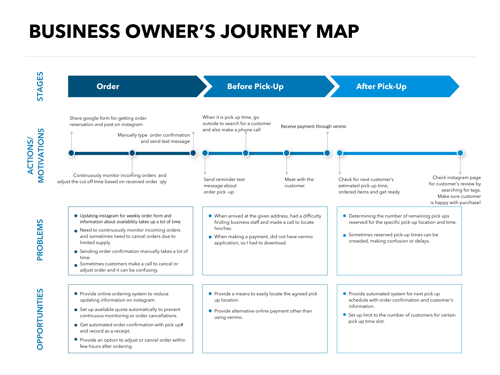

Designing a Digital Storefront for a Local Bakery Shop

Photo by CCACCA Bakery
Photo by CCACCA Bakery
Project at Glance
- Length: 2 months
- Methods: 5 Why's, Online Survey, Interview, Persona, User Journey, Wireframing, User Testing
- Tool: Sketch
- Role: Independent project (I led all phases of the research and design process)
Background
Due to recent public health concerns regarding the COVID-19 virus, brick-and-mortar bakeries are facing difficult times recovering from lost sales. One of my closest friends just started a new bakery business (called "CCACCA") during these difficult times, so I volunteered to help reorient their business and transition from a physical to an online-only storefront.
Goal
The goal of this project is to understand the needs of customers who purchase baked goods through an online process and design an online storefront for an online bakery shop.
Deep Dive into Owner's Painpoints
To better understand the owner's challenges and pain points, I conducted a root cause analysis technique called the 5 Why's with my friend and her partner who are both owners of the bakery business. The 5 Why's technique is a simple, yet powerful method to get at the root cause of a problem by successively asking why 5 times until the underlying source of the problem surfaces.
The owners elaborated on three problematic pain points during this exercise. Below are their answers (indicated by the arrows) to the 5 Why's
- Managing several incoming orders is difficult Need to prepare dough in advance Can't make too many baked goods in a given week Limited resources and employees to mass produce Current ordering system is inefficient (e.g., Instagram link to Google forms) No automated mechanisms in place to process payment online or cutoff number of reserved orders each week
- Customer service and communication is burdensome Current approach is inefficient Difficult to rely on text messaging to communicate pick up related information (e.g., time/date, order confirmation) Cannot keep track of all communications in social media and text messages Too much time and attention required Both owners occupied with day job and engaging with customers would disrupt baking process
- Arranging for pick ups is difficult Customers cannot find owners at pick up location Pick up location is vague (e.g., parking spot, in front of mailbox) and cannot be easily described No physical address for business available Cannot rent physical location yet Concerns due to small scale and COVID-19
Survey and Interviews
Building on these themes, I designed a survey and gathered responses from 27 adults to better understand the needs of potential customers of an online bakery business (link to survey). I also interviewed five people who have regularly purchased baked goods from local businesses and are currently living in the metro Atlanta area.
I surveyed 27 respondents who were mostly between ages of 25-54 (80.9%), regularly purchased baked goods for at least once a week (74%) in the past 3 months, spending $15-30 (63%) each purchase. Among them, 59% indicated that social media (e.g., Instagram) had a huge influence on their decision to spend their own money to try out a new bakery shop.
In the survey I also asked about features that people expect to be most convenient when there isn't a fixed address for the business. Many respondents found the online ordering system, curbside pick up process and customer support to be most important features among others.
I further investigated some of these salient findings through 20 minute interviews with five of the previous survey respondents. Insights from the survey and interviews helped me direct my attention toward three customer pain points:
- Participants pointed out an overall disconnected experience from pictures in social media to the online ordering system.
- Inconvenience in customer support after the ordering process (such as addressing very simple questions about payment and pick up) and complicated in-person pickup process was a huge factor in stopping customers from reordering.
- Description of the menu and photos shown online are critical when making the decision to purchase from never shopped at an online store.
Synthesis of User Research
Both research efforts with the owners and potential customers of the business helped me identify three priority needs to provide a narrow scope for the project.
- Translate the social media experience into the online ordering system
- Provide efficient means to manage online orders for a limited batch, and provide streamlined customer service
- Improve the pick up process where the location is not tied to a fixed physical address
Persona
In line with the identified priority needs, I generated two customer user personas as below. These personas helped me keep focused on key characteristics of the target population that I have gathered through the survey and interviews.

Journey Map
In addition to the personas, I also created a user journey map to better understand, empathize with the users through synthesize of data from above. This journey map graphically represents each touchpoints' feelings, thoughts and opportunities for both owner and customer users.
 